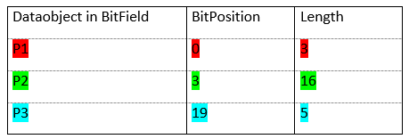
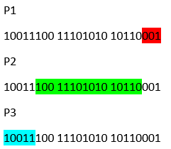
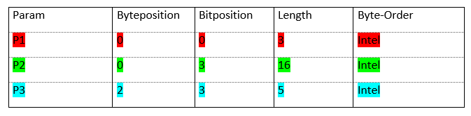
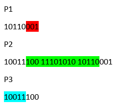
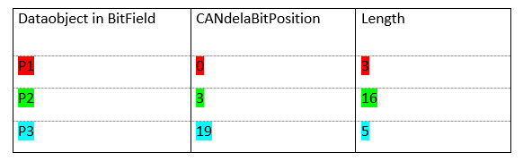
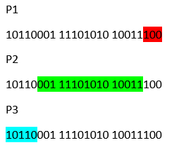
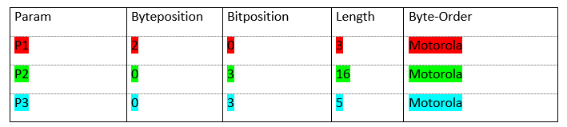
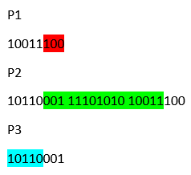
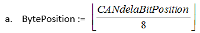
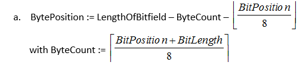

| Feature | See chapter | |
|---|---|---|
| CANdelaStudio 4.0 | ||
| Support for Odx2.0.1 | Introduction | |
| Export of PROTOCOL-LAYER and COMPARAM-SPEC | Options, Communication Parameters and ProtocolLayer, Value inheritance between Base-Variants and Protocols | |
| Generation of SHORT-NAME/LONG-NAME and DESC for DIAG-LAYERs | Common properties | |
| Empty Text-tables, Characteristic-curves and Formula - DataTypes are exported as 'IDENTITY'-DOP | Text table, Characteristic curve, Formula | |
| Export of Packet-DataTypes as STRUCTURE | Packet | |
| CANdela Studio 4.0 SP3 | ||
| Optional export of Descriptions/Formatted Descritpions | Options | |
| DIAG-SERVICE.IS-MANDATORY | IS-MANDATORY | |
| Export of SDGs at DTC-DOP | Options, DTC table | |
| CANdelaStudio 4.0 SP4 | ||
| Empty Iterators are skipped | - | |
| SimpleProxyComp with destiny='any' is exported as IDENTITY-DOP | SimpleProxyComp with destiny='any' | |
| CANdelaStudio 5.0 | ||
| Export of TABLEs | Mapping of CANdela diagnostic instances to ODX | |
| Export of MUX | Generic Muxes | |
| CANdelaStudio 5.0 SP1 | ||
| CANdelaDiagServiceInfo | Options, Export of CANdelaServiceInformation | |
| ECU-SHARED-DATA | Options, ECU-SHARED-DATA | |
| VEHICLE-INFO-SPEC | Options, VEHICLE-INFO-SPEC | |
| CANdelaStudio 5.0 SP2 | ||
| Export of CANdelaTemplateInformation | Options, CANdelaTemplateInformation | |
| Export of a single TABLE per diagnostic class | Export of a single TABLE per diagnostic class | |
| Export of CANdelaJobContainerInformation | Export of CANdelaServiceInformation | |
| DIAG-CODED-TYPE of Fields with fix length | DIAG-CODED-TYPE of Fields | |
| Export of STATIC-FIELD | Flat export of Packet content | |
| Unique ECU-Variant-SHORT-NAMEs | Unique ECU-Variant-SHORT-NAMEs | |
| Pdx-Export | PDX-Export | |
| TABLE.SEMANTIC calculated from STATIC-COMP-Semantic | Generation of Identification | |
| CODE-FILEs are exported | Export of Jobs, Procedural | |
| ID-Generation | ID | |
| CANdela-TemplateInformation | CANdelaTemplateInformation | |
| DIAG-SERVICE.SHORT-NAME/LONG-NAME | DIAG-SERVICE.SHORT-NAME/LONG-NAME | |
| DIAG-SERVICE.IS-MANDATORY | IS-MANDATORY | |
| Export of JAVA-Jobs | Export of Jobs | |
| SINGLE-ECU-JOB.SHORT-NAME/LONG-NAME | Deactivated Jobs | |
| DiagInstance.Description as TABLE-ROW.DESC | Generation of Identification | |
| Export of more than one file per DIAG-LAYER | Exported ODX-Files | |
| Export of OIDs | Hierarchical IDs | |
| Export of LogMessages to the ODX-File | Export of LogMessages to File | |
| Duplicate Reserved PARAM for DataTypes with BitMask | DataObjects referencing DataTypes with BitMasks | |
| VariantIdentification for Dynamic TABLEs | VariantIdentification for DIAG-SERVICEs using dynamic TABLEs | |
| Check of PHYSICAL-TYPEs for SYSTEM-PARAMs | SYSTEM-PARAM | |
| DIAG-CODED-TYPE for RESEREDs | Reserved-DataObjects in Intel-BitFields | |
| Handling of empty CASEs | Generic Muxes | |
| Invertability of PiecewiseLinear-DataType | Piecewise Linear | |
| COMPARAMs for FIAT-KWP in Odx201 | Optimization of COMPARAM-REFs | |
| Support for EndOfService-Iterator in TABLEs | Preconditions | |
| TID from ShortCutName | DIAG-SERVICE.SHORT-NAME/LONG-NAME | |
| BitPosition0 | Dataobjects with variable length | |
| ODX2.1.0 Specific modifications | ||
| Export of CANdela-StateModel to ODX2.1.0 STATE-MODEL | ODX 2.1.0 STATE-Model | |
| Export of NRC-CONST | Export of NRC-CONST | |
| State-TransitionRefs for SINGLE-ECU-JOB | States at Jobs | |
| PhysicalType A_INT32/A_UINT32 for LinearDataTypes | 64Bit Atomic data types | |
| Uncovered coded values | 64Bit Atomic data types | |
| Semantics at VService/VJob | SEMANTIC at Service, SEMANTIC at Job | |
| DefaultValues for GroupOfDtc | "Supports single errors" | |
| Ranges for Mux-Cases | Generic Muxes | |
| CompuInverse-Values | Linear, Piecewise Linear, Text table | |
| Inheritance in case of VariantIdentification | Value inheritance and VariantIdentification | |
| Default values for StatusOfDtc | StatusOfDtc | |
| Multilanguage ODX | [ODXE-R1160] | |
| ODX2.2.0 | ODX2.2.0 Specific elements | |
| COMPARAM-REFs at DIAG-SERVICE | COMPARAM-REF | |
| Improved handling of PDX-Export | ||
| Naming of TABLEs | Generation from Attribute-values | |
| ADDITIONAL-AUDIENCE(ODX2.2.0) | Exclusion of SUBCOMPONENTS for Variants | |
| Configure type of TABLE usage in Template | Mapping types | |
| Export of ECU-SUB-COMPONENTS (ODX2.2.0) | SUB-COMPONENTS | |
| Export only necessary COMPARAM-REFs | Communication Parameters and ProtocolLayer | |
| Export of Synchronization Attribute | Synchronization attribute | |
| Support for DTC-Pool | StatusOfDtc | |
| Allow definition of MUX in Telegram Table | MUX | |
| Allow definition of FIELDs in Telegram Table | FIELD data types | |
| Abort of ODX-Export in case the cdd is incorrect / Treat warnings as errors | Options | |
| Documentation of Warnings and Errors | Creating ODX documents with CANdelaStudio | |
| Change extension of ODX-D parts to "odx-d" | File name extension odx-d | |
| Evaluate CANdelaService-property "TestsystemSetsSprmib" | DIAGNOSTIC-CLASS | |
| Usage of MATCHING-REQUEST-PARAM | Usage of MATCHING-REQUEST-PARAM | |
| Allow exclusion of Vehicle System Group for some variants | Exclusion of SUBCOMPONENTS for Variants | |
| Deactivate Jobs | Deactivated Jobs | |
| Possibility to make an ODX Export of selected DiagClasses or/and -Instances | Export of selected Diagnostic classes, Instances and JobContainers | |
| States at Jobs | States at Jobs | |
| Export data objects associated with Vehicle System Group | DataObjects associated with VehicleSystem Groups | |
| Support for Services without Request | Export of Services without Request | |
| Support for K-Line Comparams | Mapping Tables for COMPARAM-REFs | |
| Increase maximum name length to 255 | ODX LONG-NAME | |
| Handling of ZeroTerminated Fix-Length ASCII-Fields | Fix length fields | |
| ODX220 Do not export DiagInstanceQualifier as Prefix for PARAMs in TABLE-ROWs | Generation of Identification | |
| CANdela 7.1 | ||
| Generation of ENABLED-AUDIENCE-REF | ADDITIONAL-AUDIENCES | |
| "WrapBitfieldInStructure" attribute | [ODXE-R1100-PhysBitfield] | |
| Support for K-Line in ODX201 | Default mapping KWP K-Line | |
| Support of MayBeComined via an additional DIAG-SERVICE for the TABLE | Additional service for "Maybecombined" | |
| Mapping of "unsupported" COMPARAMs | Mapping of "Unsupported" comparams | |
| Support for UNITs at COMPARAMs | Mapping of "Unsupported" comparams | |
| CANdela 7.5 | ||
| Support for TABLE-ROW-REFs to ECU-SHARED-DATA | TABLE-ROWs from ECU-SHARED-DATA | |
| Separate service for "supports single errors" | "Supports single errors" | |
| Support multiple data objects with dynamic length within a single telegram table | Dataobjects with variable length | |
| CANdela 8.0 | ||
| Job Output parameters in Identification features | Variant identification | |
| ODX-Version for ECU-SHARED-DATA | Support for different versions |
| Elements | Children | Attributes |
| ADDRESS | ||
| ADMIN-DATA | DOC-REVISIONS LANGUAGE |
|
| ALL-VALUE | ||
| AUDIENCE | IS-AFTERMARKET IS-AFTERSALES IS-DEVELOPMENT IS-MANUFACTURING IS-SUPPLIER |
|
| BASE-VARIANT | ADMIN-DATA COMPANY-DATAS COMPARAM-REFS DESC DIAG-COMMS DIAG-DATA-DICTIONARY-SPEC FUNCT-CLASSS GLOBAL-NEG-RESPONSES IMPORT-REFS LONG-NAME NEG-RESPONSES PARENT-REFS POS-RESPONSES REQUESTS SHORT-NAME |
ID OID |
| BASE-VARIANT-REF | DOCREF DOCTYPE ID-REF |
|
| BASE-VARIANTS | BASE-VARIANT | |
| BASIC-STRUCTURE-REF | ID-REF | |
| BIT-LENGTH | ||
| BIT-MASK | ||
| BIT-POSITION | ||
| BYTE-LENGTH | ||
| BYTE-POSITION | ||
| BYTE-SIZE | ||
| CASE | LONG-NAME LOWER-LIMIT SHORT-NAME STRUCTURE-REF UPPER-LIMIT |
|
| CASES | CASE | |
| CATEGORY | ||
| CHANGE | ||
| CITY | ||
| CODE-FILE | ||
| CODED-VALUE | ||
| COMPANY-DATA | DESC LONG-NAME SHORT-NAME TEAM-MEMBERS |
ID |
| COMPANY-DATAS | COMPANY-DATA | |
| COMPARAM | DATA-OBJECT-PROP-REF DESC LONG-NAME PHYSICAL-DEFAULT-VALUE SHORT-NAME |
CPTYPE DISPLAY-LEVEL ID PARAM-CLASS |
| COMPARAM-REF | DESC PROTOCOL-SNREF VALUE |
DOCREF DOCTYPE ID-REF |
| COMPARAM-REFS | COMPARAM-REF | |
| COMPARAM-SPEC | ADMIN-DATA COMPANY-DATAS COMPARAMS DATA-OBJECT-PROPS DESC LONG-NAME SHORT-NAME UNIT-SPEC |
ID |
| COMPARAM-SPEC-REF | DOCREF DOCTYPE ID-REF |
|
| COMPARAMS | COMPARAM | |
| COMPU-CONST | V VT |
|
| COMPU-DEFAULT-VALUE | VT | |
| COMPU-DENOMINATOR | V | |
| COMPU-INTERNAL-TO-PHYS | COMPU-DEFAULT-VALUE COMPU-SCALES PROG-CODE |
|
| COMPU-INVERSE-VALUE | V | |
| COMPU-METHOD | CATEGORY COMPU-INTERNAL-TO-PHYS |
|
| COMPU-NUMERATOR | V | |
| COMPU-RATIONAL-COEFFS | COMPU-DENOMINATOR COMPU-NUMERATOR |
|
| COMPU-SCALE | COMPU-CONST COMPU-INVERSE-VALUE COMPU-RATIONAL-COEFFS DESC LOWER-LIMIT SHORT-LABEL UPPER-LIMIT |
|
| COMPU-SCALES | COMPU-SCALE | |
| CURRENT-EXP | ||
| DATA-OBJECT-PROP | COMPU-METHOD DESC DIAG-CODED-TYPE INTERNAL-CONSTR LONG-NAME PHYSICAL-TYPE SHORT-NAME UNIT-REF |
ID OID |
| DATA-OBJECT-PROP-REF | TERMINATION-VALUE | DOCREF DOCTYPE ID-REF |
| DATA-OBJECT-PROPS | DATA-OBJECT-PROP | |
| DATE | ||
| DEFAULT-CASE | LONG-NAME SHORT-NAME STRUCTURE-REF |
|
| DEPARTMENT | ||
| DESC | p | TI |
| DETERMINE-NUMBER-OF-ITEMS | BYTE-POSITION DATA-OBJECT-PROP-REF |
|
| DIAG-CODED-TYPE | BIT-LENGTH BIT-MASK LENGTH-KEY-REF MAX-LENGTH MIN-LENGTH |
BASE-DATA-TYPE BASE-TYPE-ENCODING IS-HIGHLOW-BYTE-ORDER TERMINATION xsi:type |
| DIAG-COMM-REF | ID-REF | |
| DIAG-COMM-SNREF | SHORT-NAME | |
| DIAG-COMMS | DIAG-COMM-REF DIAG-SERVICE SINGLE-ECU-JOB |
|
| DIAG-DATA-DICTIONARY-SPEC | DATA-OBJECT-PROPS DTC-DOPS DYNAMIC-ENDMARKER-FIELDS DYNAMIC-LENGTH-FIELDS END-OF-PDU-FIELDS ENV-DATA-DESCS MUXS STATIC-FIELDS STRUCTURES TABLES UNIT-SPEC |
|
| DIAG-LAYER-CONTAINER | ADMIN-DATA BASE-VARIANTS COMPANY-DATAS DESC ECU-SHARED-DATAS ECU-VARIANTS FUNCTIONAL-GROUPS LONG-NAME PROTOCOLS SHORT-NAME |
ID |
| DIAG-SERVICE | AUDIENCE DESC FUNCT-CLASS-REFS LONG-NAME NEG-RESPONSE-REFS POS-RESPONSE-REFS RELATED-DIAG-COMM-REFS REQUEST-REF SDGS SHORT-NAME |
ADDRESSING DIAGNOSTIC-CLASS ID IS-CYCLIC IS-EXECUTABLE IS-FINAL IS-MANDATORY IS-MULTIPLE OID SEMANTIC |
| DISPLAY-NAME | ||
| DISPLAY-TROUBLE-CODE | ||
| DOC-REVISION | DATE MODIFICATIONS REVISION-LABEL STATE TEAM-MEMBER-REF TOOL |
|
| DOC-REVISIONS | DOC-REVISION | |
| DOP-BASE-REF | DOCREF DOCTYPE ID-REF |
|
| DOP-REF | DOCREF DOCTYPE ID-REF |
|
| DOP-SNREF | SHORT-NAME | |
| DTC | DISPLAY-TROUBLE-CODE LEVEL SDGS SHORT-NAME TEXT TROUBLE-CODE |
ID OID |
| DTC-DOP | COMPU-METHOD DESC DIAG-CODED-TYPE DTCS LONG-NAME PHYSICAL-TYPE SHORT-NAME |
ID OID |
| DTC-DOPS | DTC-DOP | |
| DTC-REF | DOCREF DOCTYPE ID-REF |
|
| DTC-VALUE | ||
| DTC-VALUES | DTC-VALUE | |
| DTCS | DTC DTC-REF |
|
| DYNAMIC-ENDMARKER-FIELD | BASIC-STRUCTURE-REF DATA-OBJECT-PROP-REF LONG-NAME SHORT-NAME |
ID |
| DYNAMIC-ENDMARKER-FIELDS | DYNAMIC-ENDMARKER-FIELD | |
| DYNAMIC-LENGTH-FIELD | BASIC-STRUCTURE-REF DESC DETERMINE-NUMBER-OF-ITEMS LONG-NAME OFFSET SHORT-NAME |
ID IS-VISIBLE |
| DYNAMIC-LENGTH-FIELDS | DYNAMIC-LENGTH-FIELD | |
| ECU-SHARED-DATA | ADMIN-DATA COMPANY-DATAS DESC DIAG-DATA-DICTIONARY-SPEC LONG-NAME SHORT-NAME |
ID |
| ECU-SHARED-DATAS | ECU-SHARED-DATA | |
| ECU-VARIANT | ADMIN-DATA DESC DIAG-COMMS DIAG-DATA-DICTIONARY-SPEC ECU-VARIANT-PATTERNS IMPORT-REFS LONG-NAME NEG-RESPONSES PARENT-REFS POS-RESPONSES REQUESTS SHORT-NAME |
ID OID |
| ECU-VARIANT-PATTERN | MATCHING-PARAMETERS | |
| ECU-VARIANT-PATTERNS | ECU-VARIANT-PATTERN | |
| ECU-VARIANTS | ECU-VARIANT | |
| ENCRYPTION | ||
| END-OF-PDU-FIELD | BASIC-STRUCTURE-REF DESC LONG-NAME MAX-NUMBER-OF-ITEMS MIN-NUMBER-OF-ITEMS SHORT-NAME |
ID OID |
| END-OF-PDU-FIELDS | END-OF-PDU-FIELD | |
| ENTRYPOINT | ||
| ENV-DATA | ALL-VALUE DTC-VALUES LONG-NAME PARAMS SHORT-NAME |
ID OID |
| ENV-DATA-DESC | DESC ENV-DATAS LONG-NAME PARAM-SNREF SHORT-NAME |
ID OID |
| ENV-DATA-DESCS | ENV-DATA-DESC | |
| ENV-DATAS | ENV-DATA | |
| EXPECTED-VALUE | ||
| FACTOR-SI-TO-UNIT | ||
| FAX | ||
| FIXED-NUMBER-OF-ITEMS | ||
| FUNCT-CLASS | DESC LONG-NAME SHORT-NAME |
ID OID |
| FUNCT-CLASS-REF | DOCREF DOCTYPE ID-REF |
|
| FUNCT-CLASS-REFS | FUNCT-CLASS-REF | |
| FUNCT-CLASSS | FUNCT-CLASS | |
| FUNCTIONAL-GROUP | ADMIN-DATA COMPARAM-REFS DESC DIAG-COMMS DIAG-DATA-DICTIONARY-SPEC FUNCT-CLASSS GLOBAL-NEG-RESPONSES IMPORT-REFS LONG-NAME NEG-RESPONSES PARENT-REFS POS-RESPONSES REQUESTS SHORT-NAME |
ID |
| FUNCTIONAL-GROUP-REF | DOCREF DOCTYPE ID-REF |
|
| FUNCTIONAL-GROUPS | FUNCTIONAL-GROUP | |
| GLOBAL-NEG-RESPONSE | DESC LONG-NAME PARAMS SHORT-NAME |
ID OID |
| GLOBAL-NEG-RESPONSES | GLOBAL-NEG-RESPONSE | |
| IMPORT-REF | DOCREF DOCTYPE ID-REF |
|
| IMPORT-REFS | IMPORT-REF | |
| INFO-COMPONENT | SHORT-NAME | ID xsi:type |
| INFO-COMPONENT-REF | ID-REF | |
| INFO-COMPONENT-REFS | INFO-COMPONENT-REF | |
| INFO-COMPONENTS | INFO-COMPONENT | |
| INPUT-PARAM | DESC DOP-BASE-REF LONG-NAME PHYSICAL-DEFAULT-VALUE SHORT-NAME |
OID SEMANTIC |
| INPUT-PARAMS | INPUT-PARAM | |
| INTERNAL-CONSTR | LOWER-LIMIT SCALE-CONSTRS UPPER-LIMIT |
|
| ITEM-BYTE-SIZE | ||
| KEY | ||
| KEY-DOP-REF | DOCREF DOCTYPE ID-REF |
|
| LANGUAGE | ||
| LENGTH-EXP | ||
| LENGTH-KEY-REF | ID-REF | |
| LEVEL | ||
| LOGICAL-LINK | BASE-VARIANT-REF FUNCTIONAL-GROUP-REF LONG-NAME PHYSICAL-VEHICLE-LINK-REF PROTOCOL-REF SHORT-NAME |
ID xsi:type |
| LOGICAL-LINKS | LOGICAL-LINK | |
| LONG-NAME | TI | |
| LOWER-LIMIT | INTERVAL-TYPE | |
| LUMINOUS-INTENSITY-EXP | ||
| MASS-EXP | ||
| MATCHING-PARAMETER | DIAG-COMM-SNREF EXPECTED-VALUE OUT-PARAM-IF-SNREF |
|
| MATCHING-PARAMETERS | MATCHING-PARAMETER | |
| MAX-LENGTH | ||
| MAX-NUMBER-OF-ITEMS | ||
| MIN-LENGTH | ||
| MIN-NUMBER-OF-ITEMS | ||
| MODIFICATION | CHANGE REASON |
|
| MODIFICATIONS | MODIFICATION | |
| MOLAR-AMOUNT-EXP | ||
| MUX | BYTE-POSITION CASES DEFAULT-CASE DESC LONG-NAME SHORT-NAME SWITCH-KEY |
ID IS-VISIBLE OID |
| MUXS | MUX | |
| NEG-RESPONSE | LONG-NAME PARAMS SHORT-NAME |
ID OID |
| NEG-RESPONSE-REF | DOCREF DOCTYPE ID-REF |
|
| NEG-RESPONSE-REFS | NEG-RESPONSE-REF | |
| NEG-RESPONSES | NEG-RESPONSE | |
| NOT-INHERITED-DIAG-COMM | DIAG-COMM-SNREF | |
| NOT-INHERITED-DIAG-COMMS | NOT-INHERITED-DIAG-COMM | |
| ODX | COMPARAM-SPEC DIAG-LAYER-CONTAINER VEHICLE-INFO-SPEC |
MODEL-VERSION xmlns:xsi xsi:noNamespaceSchemaLocation |
| OFFSET | ||
| OFFSET-SI-TO-UNIT | ||
| OUT-PARAM-IF-SNREF | SHORT-NAME | |
| OUTPUT-PARAM | DESC DOP-BASE-REF LONG-NAME SHORT-NAME |
ID OID SEMANTIC |
| OUTPUT-PARAMS | OUTPUT-PARAM | |
| PARAM | BIT-LENGTH BIT-POSITION BYTE-LENGTH BYTE-POSITION CODED-VALUE DESC DIAG-CODED-TYPE DOP-REF DOP-SNREF LONG-NAME PHYS-CONSTANT-VALUE PHYSICAL-DEFAULT-VALUE REQUEST-BYTE-POS SHORT-NAME TABLE-KEY-REF TABLE-REF TABLE-ROW-REF |
ID OID SEMANTIC SYSPARAM xsi:type |
| PARAM-SNREF | SHORT-NAME | |
| PARAMS | PARAM | |
| PARENT-REF | NOT-INHERITED-DIAG-COMMS | DOCREF DOCTYPE ID-REF xsi:type |
| PARENT-REFS | PARENT-REF | |
| PHONE | ||
| PHYS-CONSTANT-VALUE | ||
| PHYSICAL-DEFAULT-VALUE | ||
| PHYSICAL-DIMENSION | CURRENT-EXP DESC LENGTH-EXP LONG-NAME LUMINOUS-INTENSITY-EXP MASS-EXP MOLAR-AMOUNT-EXP SHORT-NAME TEMPERATURE-EXP TIME-EXP |
ID |
| PHYSICAL-DIMENSION-REF | ID-REF | |
| PHYSICAL-DIMENSIONS | PHYSICAL-DIMENSION | |
| PHYSICAL-TYPE | PRECISION | BASE-DATA-TYPE DISPLAY-RADIX |
| PHYSICAL-VEHICLE-LINK | DESC LONG-NAME SHORT-NAME VEHICLE-CONNECTOR-PIN-REFS |
ID TYPE |
| PHYSICAL-VEHICLE-LINK-REF | ID-REF | |
| PHYSICAL-VEHICLE-LINKS | PHYSICAL-VEHICLE-LINK | |
| PIN_NUMBER | ||
| POS-RESPONSE | DESC LONG-NAME PARAMS SHORT-NAME |
ID OID |
| POS-RESPONSE-REF | DOCREF DOCTYPE ID-REF |
|
| POS-RESPONSE-REFS | POS-RESPONSE-REF | |
| POS-RESPONSES | POS-RESPONSE | |
| PRECISION | ||
| PROG-CODE | CODE-FILE ENCRYPTION ENTRYPOINT REVISION SYNTAX |
|
| PROG-CODES | PROG-CODE | |
| PROTOCOL | ADMIN-DATA COMPARAM-REFS COMPARAM-SPEC-REF DESC DIAG-COMMS DIAG-DATA-DICTIONARY-SPEC FUNCT-CLASSS GLOBAL-NEG-RESPONSES IMPORT-REFS LONG-NAME NEG-RESPONSES POS-RESPONSES REQUESTS SHORT-NAME |
ID OID TYPE |
| PROTOCOL-REF | DOCREF DOCTYPE ID-REF |
|
| PROTOCOL-SNREF | SHORT-NAME | |
| PROTOCOLS | PROTOCOL | |
| REASON | ||
| RELATED-DIAG-COMM-REF | RELATION-TYPE | DOCREF DOCTYPE ID-REF |
| RELATED-DIAG-COMM-REFS | RELATED-DIAG-COMM-REF | |
| RELATION-TYPE | ||
| REQUEST | DESC LONG-NAME PARAMS SHORT-NAME |
ID OID |
| REQUEST-BYTE-POS | ||
| REQUEST-REF | DOCREF DOCTYPE ID-REF |
|
| REQUESTS | REQUEST | |
| REVISION | ||
| REVISION-LABEL | ||
| ROLE | ||
| ROLES | ROLE | |
| SCALE-CONSTR | LOWER-LIMIT SHORT-LABEL UPPER-LIMIT |
VALIDITY |
| SCALE-CONSTRS | SCALE-CONSTR | |
| SD | SI TI |
|
| SDG | SD SDG SDG-CAPTION |
|
| SDG-CAPTION | DESC LONG-NAME SHORT-NAME |
ID OID |
| SDGS | SDG | |
| SHORT-LABEL | TI | |
| SHORT-NAME | ||
| SINGLE-ECU-JOB | AUDIENCE DESC FUNCT-CLASS-REFS INPUT-PARAMS LONG-NAME OUTPUT-PARAMS PROG-CODES RELATED-DIAG-COMM-REFS SDGS SHORT-NAME |
ID IS-EXECUTABLE OID SEMANTIC |
| STATE | ||
| STATIC-FIELD | BASIC-STRUCTURE-REF FIXED-NUMBER-OF-ITEMS ITEM-BYTE-SIZE LONG-NAME SHORT-NAME |
ID |
| STATIC-FIELDS | STATIC-FIELD | |
| STRUCTURE | BYTE-SIZE DESC LONG-NAME PARAMS SHORT-NAME |
ID IS-VISIBLE OID |
| STRUCTURE-REF | DOCREF DOCTYPE ID-REF |
|
| STRUCTURES | STRUCTURE | |
| SWITCH-KEY | BIT-POSITION BYTE-POSITION DATA-OBJECT-PROP-REF |
|
| SYNTAX | ||
| TABLE | KEY-DOP-REF LONG-NAME SHORT-NAME TABLE-ROW TABLE-ROW-REF |
ID OID SEMANTIC |
| TABLE-KEY-REF | ID-REF | |
| TABLE-REF | ID-REF | |
| TABLE-ROW | DESC KEY LONG-NAME SHORT-NAME STRUCTURE-REF |
ID OID |
| TABLE-ROW-REF | DOCREF DOCTYPE ID-REF |
|
| TABLES | TABLE | |
| TEAM-MEMBER | ADDRESS CITY DEPARTMENT DESC FAX LONG-NAME PHONE ROLES SHORT-NAME ZIP |
ID |
| TEAM-MEMBER-REF | DOCREF DOCTYPE ID-REF |
|
| TEAM-MEMBERS | TEAM-MEMBER | |
| TEMPERATURE-EXP | ||
| TERMINATION-VALUE | ||
| TEXT | TI | |
| TIME-EXP | ||
| TOOL | ||
| TROUBLE-CODE | ||
| UNIT | DESC DISPLAY-NAME FACTOR-SI-TO-UNIT LONG-NAME OFFSET-SI-TO-UNIT PHYSICAL-DIMENSION-REF SHORT-NAME |
ID |
| UNIT-REF | DOCREF DOCTYPE ID-REF |
|
| UNIT-SPEC | PHYSICAL-DIMENSIONS UNITS |
|
| UNITS | UNIT | |
| UPPER-LIMIT | INTERVAL-TYPE | |
| V | ||
| VALUE | ||
| VEHICLE-CONNECTOR | LONG-NAME SHORT-NAME VEHICLE-CONNECTOR-PINS |
|
| VEHICLE-CONNECTOR-PIN | PIN_NUMBER SHORT-NAME |
ID TYPE |
| VEHICLE-CONNECTOR-PIN-REF | ID-REF | |
| VEHICLE-CONNECTOR-PIN-REFS | VEHICLE-CONNECTOR-PIN-REF | |
| VEHICLE-CONNECTOR-PINS | VEHICLE-CONNECTOR-PIN | |
| VEHICLE-CONNECTORS | VEHICLE-CONNECTOR | |
| VEHICLE-INFO-SPEC | INFO-COMPONENTS LONG-NAME SHORT-NAME VEHICLE-INFORMATIONS |
ID |
| VEHICLE-INFORMATION | INFO-COMPONENT-REFS LOGICAL-LINKS LONG-NAME PHYSICAL-VEHICLE-LINKS SHORT-NAME VEHICLE-CONNECTORS |
|
| VEHICLE-INFORMATIONS | VEHICLE-INFORMATION | |
| VT | TI | |
| ZIP | ||
| b | ||
| br | ||
| i | ||
| li | b i |
|
| ol | li | |
| p | b br i ol sup ul |
|
| sup |
Table 42: List of supported ODX elements
The following section lists the mapping of CANdela-Ecu-Interface-Attributes to ODX-COMPARAMs. The mapping is dependant on the PROTOCOL-STANDARD.
| CANdela-Interface-Attribute-Qualifier | COMPARAM-SHORT-NAME |
|---|---|
| Baudrate, baudrate | Baudrate |
| AddrScheme, addrSchema | AddressingScheme |
| idPhysReq, ReqCanId, ReqCanIdPhys | PhysicalRequestCANID |
| idPhysRes, ResCanId | PhysicalResponseCANID |
| ReqCanIdFunc | FunctionalRequestCANID |
| StMin( < 127) | Stmin |
| StMin ( 241 < StMin <= 249) | StminExtended |
| Blocksize | Blocksize |
| TimeoutBs, timeoutBs | Bs |
| TimeBr, timeBr | Br |
| TimeCs, timeCs | Cs |
| TimeoutCr, timeoutCr | Cr |
| P2Timeout, P2Client | P2max |
| P2ExTimeout, P2ExClient | P2Star |
| P3Time, S3Client | P3min |
| BaseAddress+TesterAddress ( extended Addressing) | PhysicalRequestCANID |
Table 43: CANdela COMPARAM mapping UDS
| CANdela-Interface-Attribute-Qualifier | COMPARAM-SHORT-NAME |
|---|---|
| Baudrate, baudrate | Baudrate |
| AddrScheme, addrSchema | AddressingScheme |
| idPhysReq, ReqCanId, ReqCanIdPhys | PhysicalRequestCANID |
| idPhysRes, ResCanId | PhysicalResponseCANID |
| ReqCanIdFunc | FunctionalRequestCANID |
| StMin, STMIN ( < 127) | Stmin |
| StMin, STMIN ( 241 < StMin <= 249) | StminExtended |
| Blocksize | Blocksize |
| TimeoutBs, timeoutBs | Bs |
| TimeBr, timeBr | Br |
| TimeCs, timeCs | Cs |
| TimeoutCr, timeoutCr | Cr |
| P2Timeout, P2Client | P2max |
| P2ExTimeout, P2ExClient | P2Star |
| P3Time | P3min |
| S3Client | S3 |
Table 44: CANdela COMPARAM mapping KWP
| CANdela Qualifier | ODX comparam |
|---|---|
| BaseAddress, TesterTgtAllNode, BroadcastAddress, CanIdType, CP_IDENTIFIER_LENGTH, AddrScheme, CP_ADDRESSMODE, CanIdTypeFunc, AddrSchemeFunc |
ISO_15765_2.CP_UniqueRespIdTable |
| baudrate,Baudrate | ISO_11898_2_DWCAN.CP_Baudrate |
| idPhysReq,ReqCanId,ReqCanIdPhys | ISO_15765_2.CP_CanPhysReqId |
| idPhysRes,ResCanId | ISO_15765_2.CP_CanRespUSDTId |
| ReqCanIdFunc | ISO_15765_2.CP_CanFuncReqId |
| UudtResCanId | ISO_15765_2.CP_CanRespUUDTId |
| StMin,CP_STMIN_SUG | ISO_15765_2.CP_StMin |
| Blocksize,BlockSize | ISO_15765_2.CP_BlockSize |
| TimeoutBs,timeoutBs | ISO_15765_2.CP_Bs |
| TimeBr,timeBr | ISO_15765_2.CP_Br |
| TimeCs,timeCs | ISO_15765_2.CP_Cs |
| TimeoutCr,timeoutCr | ISO_15765_2.CP_Cr |
| P2Timeout,P2Client | ISO_15765_3.CP_P2Max |
| P2ExTimeout,P2ExClient | ISO_15765_3.CP_P2Star |
| P3Time,S3Client | ISO_15765_3.CP_TesterPresentTime |
| CANFrameFillerByte | ISO_15765_2.CP_CanFillerByte |
| TimeoutAs,timeoutAs | ISO_15765_2.CP_As |
| TimeoutAr,timeoutAr | ISO_15765_2.CP_Ar |
| P3ClientPhys | ISO_15765_3.CP_P3Phys |
| P3ClientFunc | ISO_15765_3.CP_P3Func |
| FillerByteHandling | ISO_15765_2.CP_CanFillerByteHandling |
| EcuAddress | ISO_15765_2.CP_CanPhysReqExtAddr |
| DefaultTesterAddress | ISO_15765_2.CP_CanRespUSDTExtAddr |
| CANdela Qualifier | ODX comparam |
|---|---|
| CanIdType, CP_IDENTIFIER_LENGTH, AddrScheme, CP_ADDRESSMODE, CanIdTypeFunc, AddrSchemeFunc, BaseAddress, TesterTgtAllNode, BroadcastAddress |
ISO_15765_2.CP_UniqueRespIdTable |
| baudrate,Baudrate | ISO_11898_2_DWCAN.CP_Baudrate |
| idPhysReq,ReqCanId,ReqCanIdPhys | ISO_15765_2.CP_CanPhysReqId |
| idPhysRes,ResCanId | ISO_15765_2.CP_CanRespUSDTId |
| ReqCanIdFunc | ISO_15765_2.CP_CanFuncReqId |
| UudtResCanId | ISO_15765_2.CP_CanRespUUDTId |
| StMin,CP_STMIN_SUG | ISO_15765_2.CP_StMin |
| Blocksize,BlockSize | ISO_15765_2.CP_BlockSize |
| TimeoutAs,timeoutAs | ISO_15765_2.CP_As |
| TimeoutAr,timeoutAr | ISO_15765_2.CP_Ar |
| TimeoutBs,timeoutBs | ISO_15765_2.CP_Bs |
| TimeBr,timeBr | ISO_15765_2.CP_Br |
| TimeCs,timeCs | ISO_15765_2.CP_Cs |
| TimeoutCr,timeoutCr | ISO_15765_2.CP_Cr |
| P2Timeout,P2Client | ISO_14230_3.CP_P2Max |
| P2ExTimeout,P2ExClient | ISO_14230_3.CP_P2Star |
| P3Time | ISO_14230_3.CP_P3Min |
| CANFrameFillerByte | ISO_15765_2.CP_CanFillerByte |
| FillerByteHandling | ISO_15765_2.CP_CanFillerByteHandling |
| EcuAddress | ISO_15765_2.CP_CanPhysReqExtAddr |
| DefaultTesterAddress | ISO_15765_2.CP_CanRespUSDTExtAddr |
| S3Client | ISO_14230_3.CP_TesterPresentTime |
| CANdela-Interface-Attribute-Qualifier | COMPARAM-SHORT-NAME |
|---|---|
| CP_Baudrate | ISO_14230_1_UART.CP_Baudrate |
| CP_PhysReqTargetAddr | ISO_14230_2.CP_PhysReqTargetAddr |
| CP_TesterSourceAddress | ISO_14230_2.CP_TesterSourceAddress |
| CP_FuncReqTargetAddr | ISO_14230_2.CP_FuncReqTargetAddr |
| CP_5BaudAddressPhys | ISO_14230_2.CP_5BaudAddressPhys |
| CP_HeaderFormatKW | ISO_14230_2.CP_HeaderFormatKW |
| CP_InitializationSettings | ISO_14230_2.CP_InitializationSettings |
| CP_TIdle | ISO_14230_2.CP_TIdle |
| CP_W1Max | ISO_14230_2.CP_W1Max |
| CP_W2Max | ISO_14230_2.CP_W2Max |
| CP_W3Max | ISO_14230_2.CP_W3Max |
| CP_W4Min | ISO_14230_2.CP_W4Min |
| CP_W4Max | ISO_14230_2.CP_W4Max |
| CP_P2Max | ISO_14230_3.CP_P2Max |
| CP_P2Max_Ecu | ISO_14230_3.CP_P2Max_Ecu |
| CP_P2Star | ISO_14230_3.CP_P2Star |
| CP_P3Max_Ecu | ISO_14230_3.CP_P3Max_Ecu |
| CP_P3Min | ISO_14230_3.CP_P3Min |
| CP_P4Min | ISO_14230_2.CP_P4Min |
| CP_TesterPresentTime | ISO_14230_3.CP_TesterPresentTime |
| CP_TesterPresentTime_Ecu | ISO_14230_3.CP_TesterPresentTime_Ecu |
| CP_TIniL | ISO_14230_2.CP_TInil |
| CP_TWup | ISO_14230_2.CP_TWup |
Example PDU:
10110001 (Bytepos = 0)
11101010 (Bytepos = 1)
10011100 (Bytepos =2)
Description in CANdela:
Bitfield Length 3, Byteorder INTEL

Extraction in CANdela:

Corresponding Description in ODX:

Extraction in ODX:

Example PDU
10110001 (Bytepos = 0)
11101010 (Bytepos = 1)
10011100 (Bytepos = 2)
Bitfield length 3, Byteorder Motorola

Extraction in CANdela model:

Corresponding description in ODX

Extraction in ODX:

A data type used in Intel and Motorola bitfields must be duplicated to ODX.
ODX Byte-/Bitpositions in ODX for Intel bitfields are calculated from the CANdelaBitposition as follows:

ODX Byte-/Bitpositions in ODX for Motorola bitfields are calculated from the CANdelaBitposition as follows:
